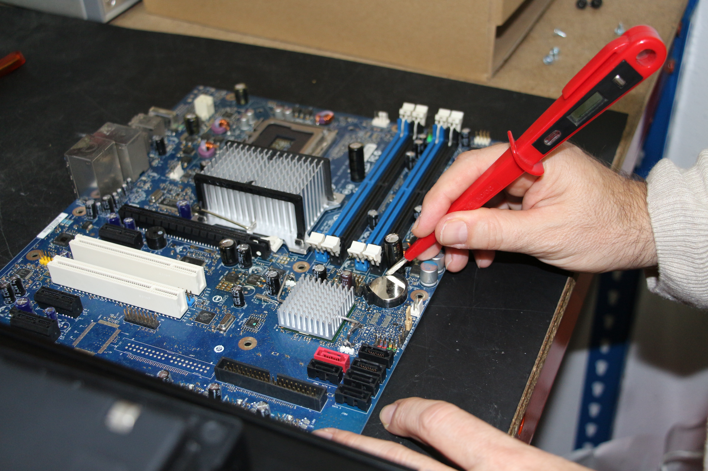
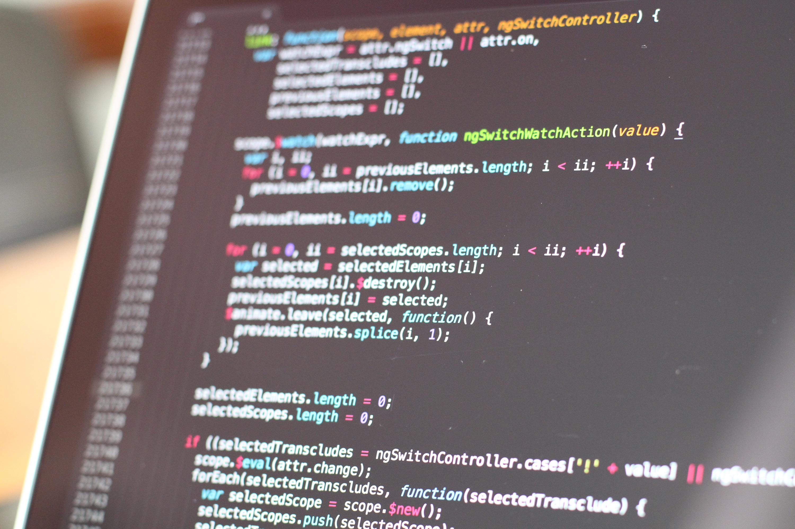

Serviços pensados para sua operação funcionar.
Suporte técnico, manutenção de equipamentos e desenvolvimento web — tudo o que sua empresa precisa para manter a tecnologia em ordem.
Suporte Técnico
Ajuda para resolver problemas e manter sua rotina tecnológica funcionando.
Ver detalhes 02Manutenção
Cuidados preventivos e corretivos para computadores, com foco em estabilidade.
Ver detalhes 03Desenvolvimento Web
Sites modernos e responsivos, pensados para gerar oportunidades.
Ver detalhes
Visão geral
Suporte técnico é um serviço que ajuda a resolver problemas relacionados a dispositivos, software e sistemas de tecnologia, além de fornecer orientações e assistência aos usuários para garantir seu funcionamento adequado. Pode ser prestado de diversas formas, como suporte presencial, por telefone, e-mail, chat online e acesso remoto.
O objetivo é solucionar questões técnicas, prevenir problemas futuros e facilitar o uso eficaz da tecnologia — crucial para manter os sistemas em funcionamento e satisfazer os usuários.
Processo de atendimento
Neste nível estão o atendimento dos chamados e os registros das solicitações. Eles são direcionados para o próximo nível. Ele somente faz a abertura dos chamados.
Este nível tenta prover uma solução. Se ele não conseguir, tenta com os profissionais do próximo nível. É o nível de atendimento em campo.
Aqui se atende os chamados do nível hierárquico inferior; se não forem resolvidos, o chamado é passado ao próximo nível. É o nível de resolução de problemas de redes e segurança.
Último nível hierárquico, de resolução de problemas complexos e novas soluções. Cada chamado é passado a um especialista de cada produto.

Visão geral
A manutenção de computadores pessoais, comumente referida como "manutenção de micros", é um conjunto de práticas e procedimentos realizados para garantir que um computador funcione de forma eficaz e confiável.
Essas atividades são essenciais para prolongar a vida útil do computador, evitar problemas de desempenho e garantir a segurança dos dados.
Processo de manutenção
• Remoção de poeira e sujeira do interior do computador.
• Limpeza de teclado, mouse e monitor.
• Ventilação e resfriamento adequados.
• Substituição ou atualização de componentes como memória RAM, disco rígido, placa de vídeo, processador, etc.
• Verificação e aperto de conexões internas, como cabos e placas.
• Manter o sistema operacional e programas atualizados com as últimas versões e correções de segurança.
• Remoção de programas não utilizados ou desatualizados.
• Fazemos cópias de segurança de dados importantes em dispositivos externos ou na nuvem para evitar perda de informações críticas.
• Atualização de antivírus e software de segurança.
• Verificação regular de malware e vírus.
• Utilização de senhas fortes e práticas de segurança online.
• Garantir que os drivers de hardware estejam atualizados para evitar conflitos e melhorar a compatibilidade.
• Realização de verificações regulares para evitar problemas antes que ocorram.

Visão geral
Desenvolvimento web é o processo de criar sites ou aplicativos que podem ser acessados pela internet. Envolve a programação e a criação de todos os elementos técnicos — código, banco de dados e design — para tornar um site funcional e interativo.
Trabalhamos com linguagens, tecnologias e frameworks para construir páginas e aplicativos que ofereçam uma experiência agradável, do site institucional simples a projetos mais complexos e dinâmicos.
Processo de criação
Sequência de ações que um usuário executa ao interagir com um site ou aplicativo, projetada para alcançar um objetivo específico, como fazer uma compra ou encontrar informações.
Esboço simples que mostra a estrutura de uma página, sem detalhes de design — usado para planejar a organização e a funcionalidade da interface.
Recurso onde a marca reúne todos os elementos e regras de design do site: cores, tipografia e formatação geral, para uma composição coesa.
Representação visual estática do projeto, mostrando aparência e layout — usada para comunicar conceitos de design antes do produto final.
Modelo inicial usado para testar e validar uma ideia antes de criar a versão final — uma versão preliminar para descobrir problemas e obter feedback.
Vamos colocar sua tecnologia em ordem.
Conte o que sua empresa precisa e receba uma proposta objetiva, sem complicação.